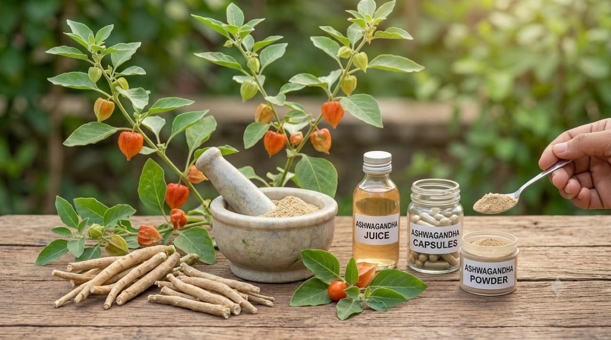
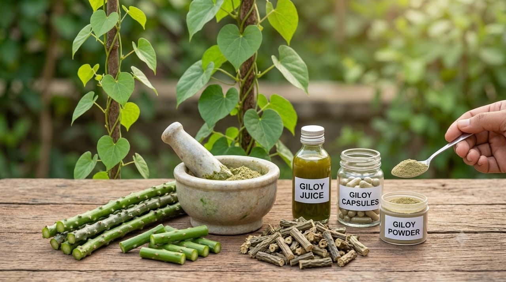

Root · JharkhandAshwagandha Root
Withania somnifera
Rooted in knowledge. Connected by technology.
Discover traditionally valued medicinal plants, the knowledge behind them, and responsibly sourced herbal products connected to the communities that preserve them.


Why we exist
Across generations, communities have carried knowledge about plants, forests and traditional wellness practices. Much of that knowledge remains fragmented, difficult to discover and disconnected from modern markets.
Tribal Doctor creates a digital bridge between this knowledge, responsible commerce and the people who preserve it.

Every plant has a place, a season and an ecosystem.

Generations of communities have carried knowledge about plants through lived experience and oral traditions.

Technology can help document, organize and make responsibly shared knowledge easier to discover.

Responsible commerce can create new opportunities while keeping provenance and sustainability visible.
Discover traditionally valued herbs and forest products with information about their origin, plant part and sourcing.

Root · JharkhandWithania somnifera

Stem · JharkhandTinospora cordifolia
Asparagus racemosus
 Flower · Jharkhand
Flower · Jharkhand
Madhuca longifolia

AI plant identification
Snap a photo. Discover the plant. Explore its traditional knowledge, origin and responsible-use information.
Upload a photo to begin
Confidence
The knowledge passport
Ashwagandha — identified and digitally catalogued.
Traditional names and documented uses are recorded.
Its sourcing region is recorded for traceability.
Knowledge is documented with appropriate community permission.
Root, leaf, flower or other plant parts are identified.
Season and responsible harvesting information are recorded.
Cleaning, drying and preparation are documented.
The finished product keeps its origin and story attached.
Scan to follow the journey from plant and knowledge to responsibly sourced product.
Where it comes from
Jharkhand's forests hold extraordinary biodiversity and generations of plant knowledge. Tribal Doctor aims to create a digital layer connecting plants, people, knowledge and responsible commerce.
 Responsible sourcing
Responsible sourcing
 Community participation
Community participation
Community contribution. Knowledge shared with permission should remain connected to the people and communities who preserve it.
Meet the CommunitiesDiscover regional suppliers, herbal ingredients and traceable sourcing opportunities through one digital platform.
Withania somnifera

Responsible sourcing begins with protecting the ecosystems that make these plants possible.
Collection methods designed to let plants and habitats regenerate.
Timing collection to natural growth cycles rather than constant demand.
Awareness of the wider ecosystem each plant belongs to, not just the yield.
A visible record connecting every product back to where and how it was sourced.
Explore traditionally valued herbs, discover their origins and connect with the knowledge behind them.
Traditionally valued roots, stems and flowers, each with its origin, plant part and sourcing on record.
Explore ProductsSnap a plant to see what it is, how it is traditionally known and where its story begins.
Identify a Plant